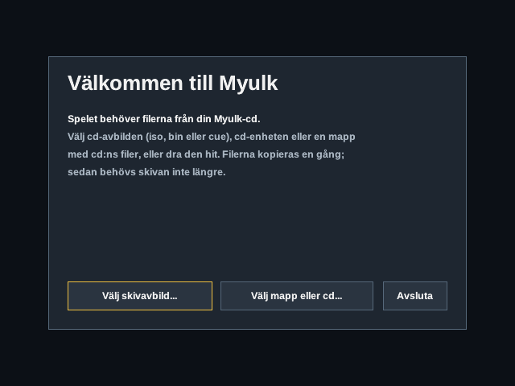
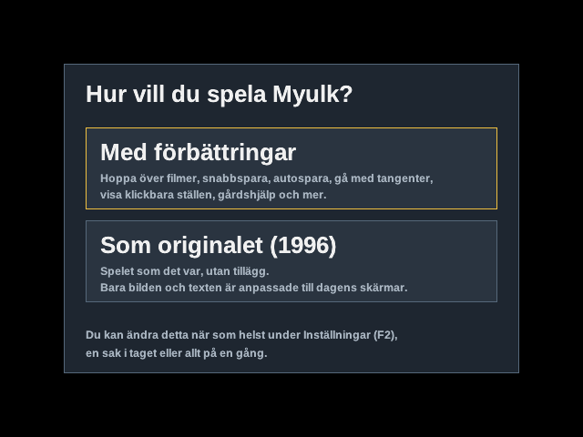
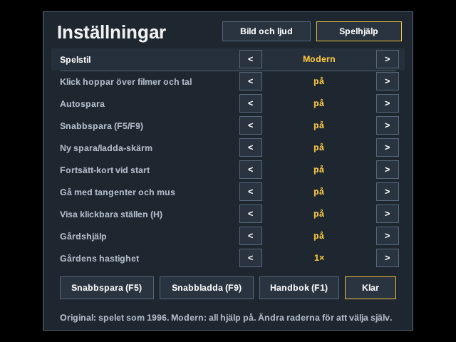

Myulk
Kampen om det öppna landskapet
Spelet från 1996 om gården Öppanäng, nu på dagens datorer och i webbläsaren. Samma gåtor, samma kor, samma tre år på gården, med din egen cd.
The 1996 Swedish game about the farm Öppanäng, now on today's computers and in the browser. The same puzzles, the same cows, the same three years on the farm, with your own CD.
SpeletThe game
Du har ärvt den förfallna gården Öppanäng. Innan du kan bli bonde väntar ett äventyr i tre delar, på Ödegården, i Staden och i Underjorden, med gåtor att lösa och människor att prata med. Mellan dem driver du gården: köper kor, plöjer och sår, tar in skörden och håller pengarna i ordning, år efter år.
You have inherited the run-down farm Öppanäng. Before you can farm it there is an adventure in three parts, on Ödegården, in Staden (the town) and in Underjorden (the underworld), with puzzles to solve and people to talk to. In between you run the farm: buy cows, plough and sow, bring in the harvest and keep the money in order, year after year.
Myulk gjordes för Windows 3.1 och har inte gått att spela på vanliga datorer på länge. Det här projektet tar tillbaka det, utan att ändra på spelet.
Myulk was made for Windows 3.1 and hasn't run on ordinary computers for a long time. This project brings it back, without changing the game.
- Utgivet
- Released
- 1996
- Ursprungligen
- Originally
- Windows 3.1, 640 × 480
- Nu
- Now
- Windows och webbläsaren
- Windows and the browser
- Språk
- Language
- Svenska
- Swedish
Som 1996, eller lite enklareAs in 1996, or a little easier
Allt här går att stänga av, en sak i taget eller allt på en gång.
Everything here can be switched off, one thing at a time or all at once.
- Hoppa över filmer och repliker med ett klick.
- Snabbspara och autospara, och en ny spara-skärm med bild och datum.
- Fortsätt där du slutade, direkt vid start.
- Gå med piltangenterna, högerklick och mushjulet.
- Visa allt klickbart i en scen genom att hålla H.
- Gårdshjälp: paus, nästa dag med ett klick, notiser om pengar och årstider, och gården i upp till åtta gånger farten.
- Handboken från spelet, med ordlista och ledtrådar, i en modern läsare med sökning.
- Skarp bild på stora skärmar, ren heltalsskalning, mjuk text och ett filter som jämnar ut de gamla 256 färgerna.
- Skip films and lines with a click.
- Quick-save and autosave, and a new save screen with pictures and dates.
- Continue where you left off, right at start.
- Walk with the arrow keys, right-click and the mouse wheel.
- See everything clickable in a scene by holding H.
- Farm helper: pause, next day with a click, notes about money and seasons, and the farm at up to eight times the speed.
- The game's handbook, with its glossary and hints, in a modern viewer with search.
- A sharp picture on big screens, pure integer scaling, smooth text and a filter that evens out the old 256 colours.
SkärmbilderScreenshots



Så fungerar detHow it works
Ingen emulator och ingen omskrivning. Ett verktyg översätter originalprogrammet, rutin för rutin, till C++, och ett nyskrivet lager gör det som Windows 3.1 gjorde. Det som spelas är originalspelet, med bilder, filmer och ljud från din cd.
No emulator and no rewrite. A tool translates the original program, routine by routine, into C++, and a newly written layer does what Windows 3.1 did. What you play is the original game, with the pictures, films and sounds from your CD.
- MYULK.EXE från din cdMYULK.EXE from your CD16-bitars Windows-program, byggt i Delphi16-bit Windows program, built with Delphi
- Omkompilatorn hittar varje rutinThe recompiler finds every routine3 926 rutiner, 176 000 instruktioner3,926 routines, 176,000 instructions
- Varje rutin blir en C++-funktionEach routine becomes a C++ functionmed originalinstruktionen bredvidwith the original instruction next to it
- Ett nytt Windows 3.1 på SDL3A new Windows 3.1 on SDL3235 Windows-funktioner: fönster, grafik, ljud, filmer235 Windows functions: windows, graphics, sound, films
- Spelet, på Windows och i webbläsarenThe game, on Windows and in the browserC++20 och WebAssemblyC++20 and WebAssembly
Hela beskrivningen av omkompileringen (engelska)The full description of the recompilation
SpelaPlay
-
Din egen Myulk-cdYour own Myulk CD
Skivan eller en avbild av den (iso, bin eller cue). Inget från spelet finns i projektet.
The disc, or an image of it (iso, bin or cue). Nothing from the game is in the project.
-
Bygg programmetBuild the program
Källkoden och en guide finns på GitHub. På Windows är det tre kommandon, och resten är väntan.
The source code and a guide are on GitHub. On Windows it's three commands, and the rest is waiting.
-
Välj cd:n vid första startenChoose the CD on first start
Programmet kontrollerar skivan och kopierar spelets filer en gång. Sedan startar det direkt.
The program checks the disc and copies the game's files once. After that it starts straight away.
Guiden på GitHubThe guide on GitHub
Webbläsarversionen kräver Chrome eller Edge.
The browser version needs Chrome or Edge.